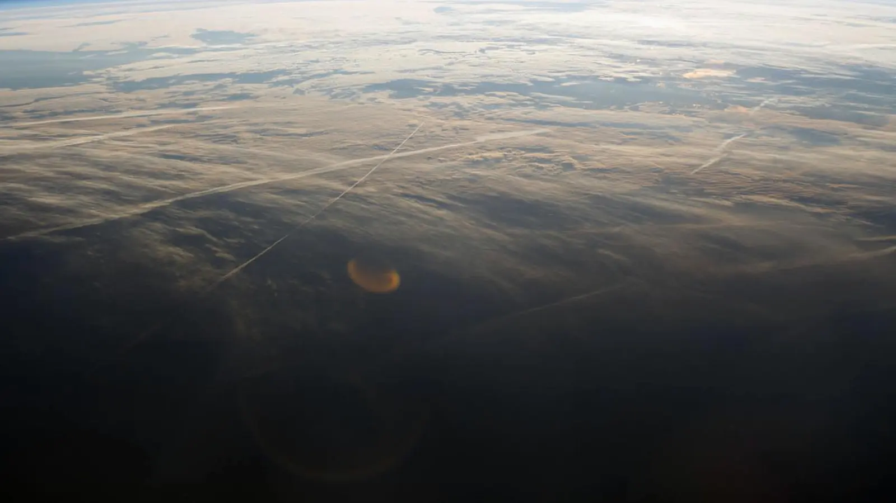
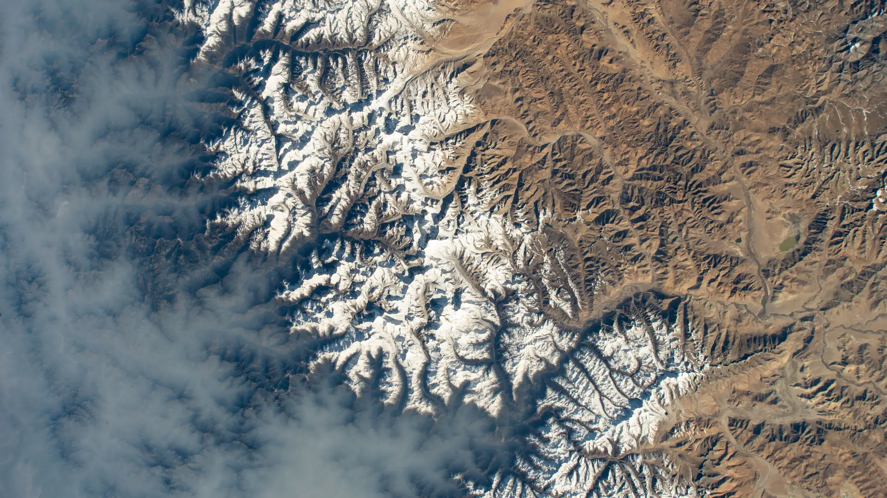
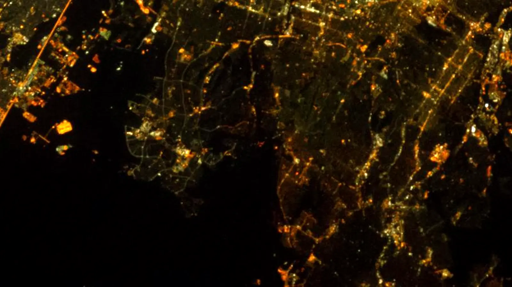
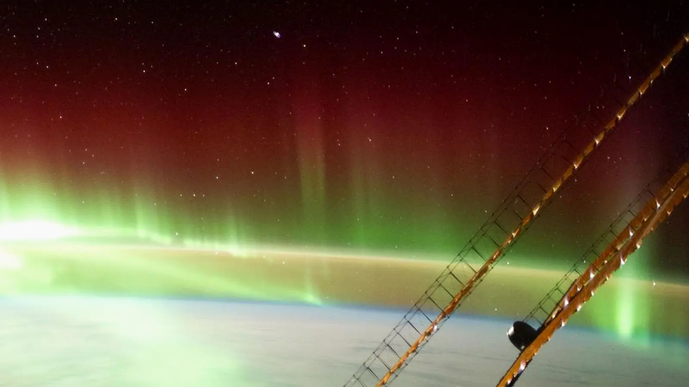
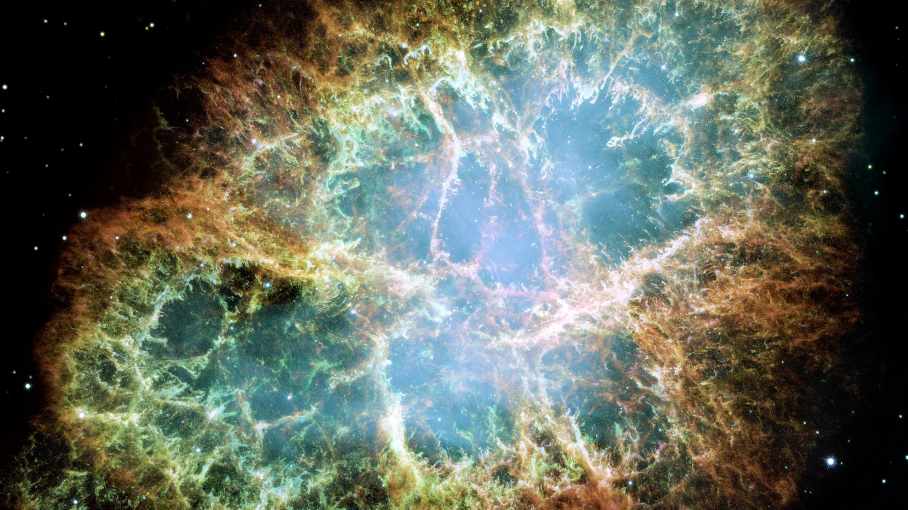
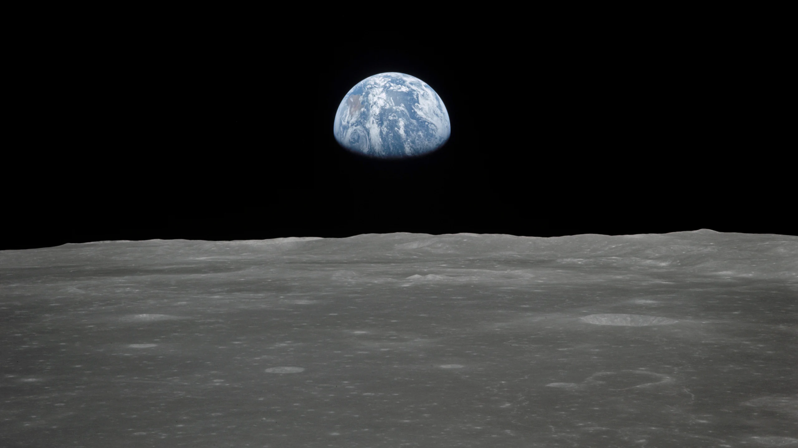
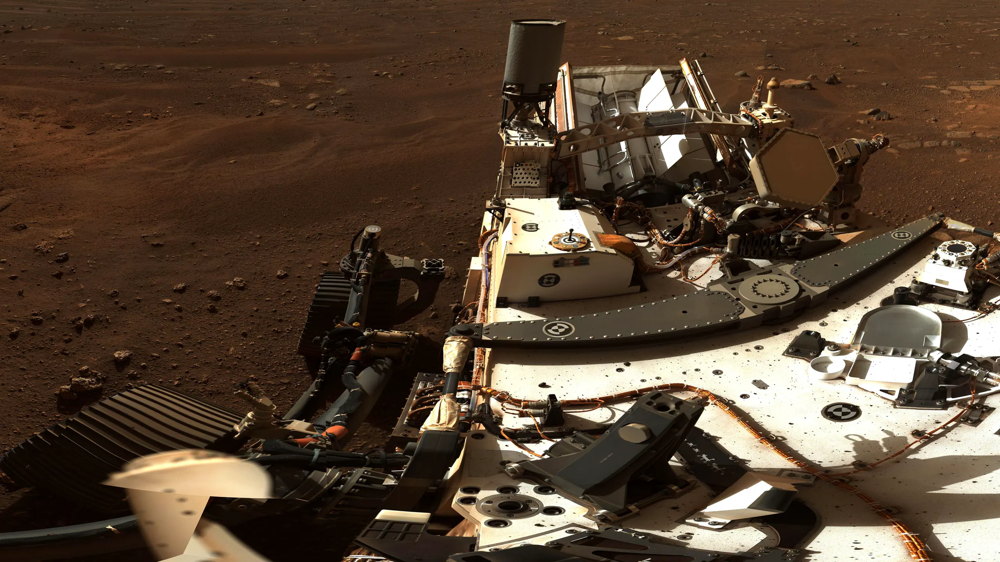
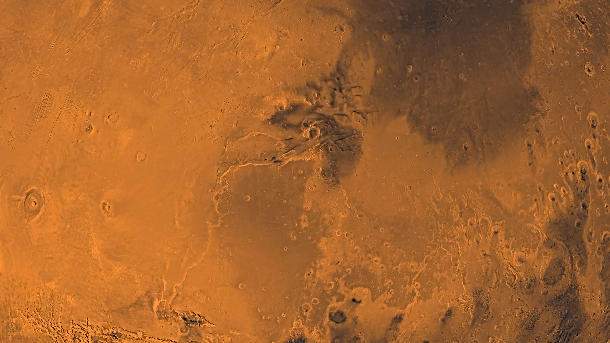

Projects
Showing 7 of 7


03 / PYTHON
Say hello to CoffeeBot!
/CoffeeBot.exe
This Python script implements a simple coffee ordering chatbot. It interacts with the user to determine their desired drink size, coffee type, and the type of milk for a latte. It then collects the user's name and confirms their order. The chatbot includes error handling to prompt the user to enter valid inputs when necessary.
You can find the code for this program on GitHub.

04 / JAVA
GPA Calculator Program
/GPA_Calculator.exe
This is a Java program that calculates and displays a person's GPA for the current semester and their cumulative GPA. The program uses a graphical user interface (GUI) to prompt the user for the number of classes taken for the semester, the number of credits for each class, and the letter grade for each class. The program then calculates the total number of credits and the total number of grade points earned, and uses this information to compute the GPA. Finally, the program displays the semester grades, the total number of credits, and the GPA on the screen.
You can find the code for this program on GitHub.

05 / PYTHON
The Boredless Tourist!
/The_Boredless_Tourist.exe
This is a simple Codecademy project that I worked on. It creates a travel recommendation system that focuses on destinations, travelers, and attractions. It starts by defining functions to find destination and attraction indices. It then organizes attractions in nested lists by destination and offers functions to add attractions and find attractions based on traveler interests. The final function provides recommendations for attractions tailored to a traveler's interests and destination. The code demonstrates its functionality by generating and printing recommendations for multiple travelers.
You can find the code for this program on GitHub.

06 / C++
Let's play Rock-Paper-Scissors!
/Rock_Paper_Scissors.exe
This code is a C++ program that implements the game Rock-Paper-Scissors using a random number generator to simulate the computer's choice. The program prompts the user to input their choice and then displays the result of the game. The program keeps track of the number of wins, losses, and ties and displays the final score at the end of the game. The game is played until the user decides to stop playing.
You can find the code for this program on GitHub.

07 / C++
Let's play a game, The Nightmare!
/Nightmare.exe
Warning: Graphic
This program is a text-based adventure game implemented in C++. It allows users to navigate through different locations and make choices that influence the game's outcome. The game starts with a welcome message and prompts for user interaction. It features locations ('field', 'home', 'forest', 'mountain', 'cave') and events ('bearAttack'). The program includes a boolean variable to track item acquisition status and utilizes the 'Sleep()' function from 'windows.h' for immersive pauses. User input is managed through keyboard commands with error handling to ensure valid commands, providing an engaging and interactive experience.
You can find the code for this program on GitHub.